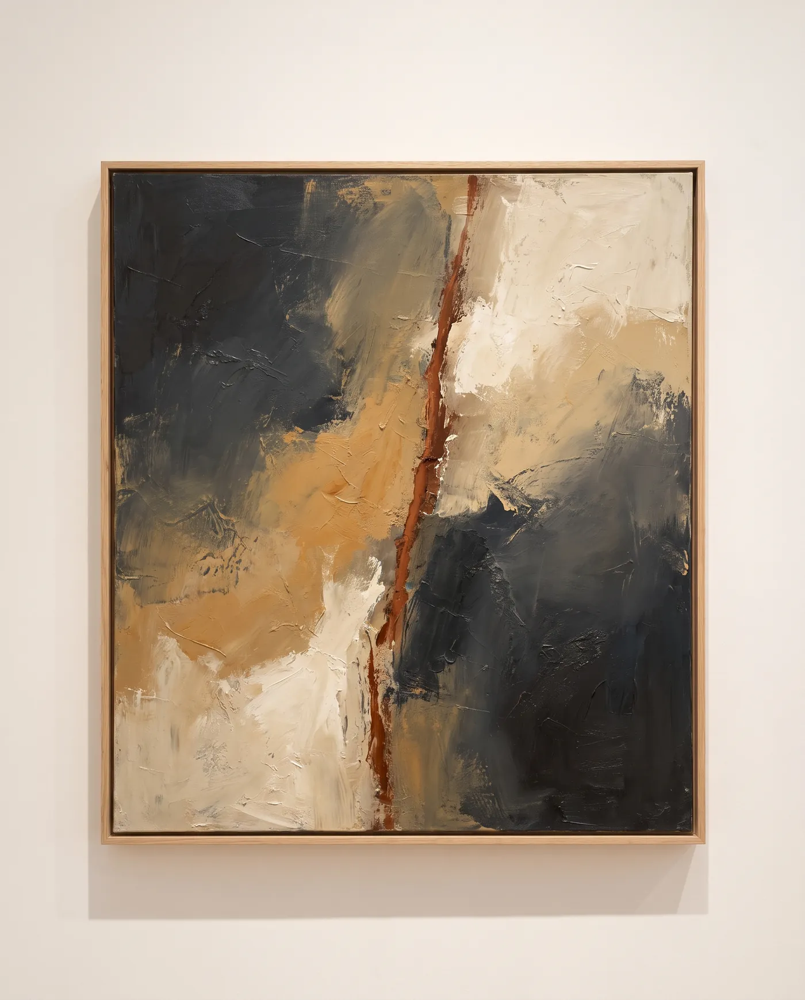

The Hour Between, 2026 oil on linen · 190 × 160 cm
Atelier № 8 is a private club for people who live with art — eight rooms behind an unmarked door, a hang that changes with the seasons, dinners where the artists stay late, and first refusal on every work we show.
Twelve members are admitted a year.
Next — Private view, the Autumn Hang · Saturday 16 August, 7 pm · Rooms I–III